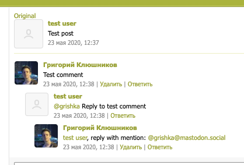

Suppose this happens: (users A and B are on the same instance)
- User A creates a post.
- User B replies to that post.
- User A replies to that reply.
- User B deletes their first reply.
- User B replies to user A’s reply and mentions the user C who is from another instance that doesn’t have any of these posts in its database.
You end up with something like this, except the “test comment” is deleted:

The issue: when user C’s instance receives a Create activity about the last reply and goes to fetch the complete thread, it can’t. The idea is that you would follow inReplyTo references up, until you encounter an object without this field, which means you’ve reached the top-level post. But if there is any deleted object along the way, you kind of hit a wall and don’t have any way of getting to the top-level post and thus completing your representation of the comment thread. Or do you? I’ve just tested with Mastodon and it doesn’t even return a Tombstone, it acts as if the post didn’t ever exist by returning a 404. Anyway, any ideas on solving this?
Related: going in the opposite direction, down from the top-level post, you have the exact same issue but with the replies collection.